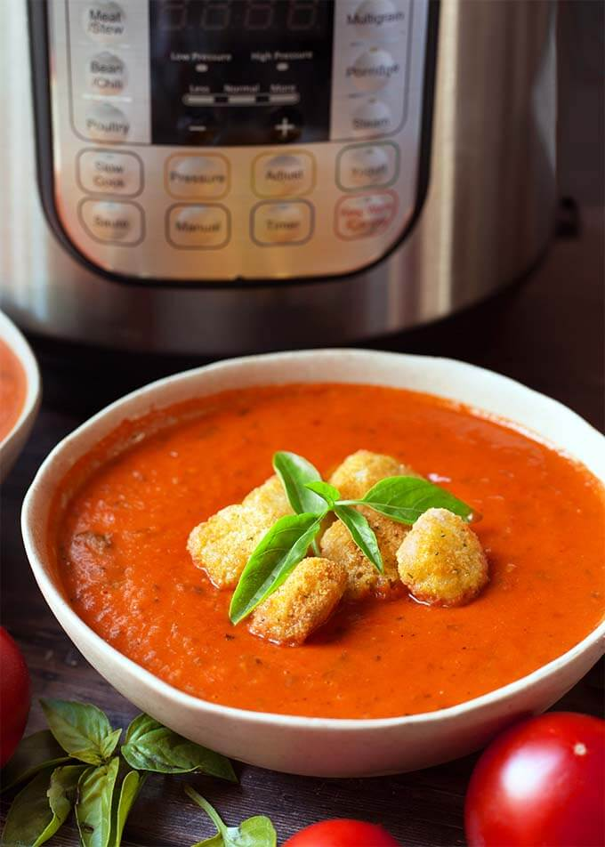

Instant Pot Tomato Soup

The easiest tomato soup you'll ever make.
This Instant Pot tomato soup is a go to meal in my household on busy nights when we are short on time, or just feeling lazy. Grilled cheese is a great accompaniment and taste great when dipped into the soup.
Ingredients
- 1 Tbsp Olive Oil
- 2 Tbsp Butter
- 1 Onion, chopped
- 4 Cloves of Garlic, pressed or minced
- 1/4 tsp Red Pepper Flakes (optional)
- 3 15 oz Cans of Diced or Crushed Tomatoes, with juice
- 4 cups Broth, chicken or vegetable
- 1 tsp Salt
- 1/2 tsp Pepper
- 1 tsp Italian Seasoning
- 1 Tbsp Fresh Basil, chopped, or 1tsp dried
- 1/2 cup grated parmesan cheese (optional)
- 1/2 cup Heavy Cream (optional)
Directions
- Press the Sauté button on the Instant Pot. When the display reads "hot" add the oil and butter.
- Add the onion and cook until translucent, about 7 minutes (let the onion brown a little for more flavor). Stir occasionally
- Add the garlic and red pepper flakes (if using) and cook for 30 seconds, stirring constantly.
- Add the tomatoes, broth, salt, pepper, Italian seasoning, and basil. Stir and close the lid of the Instant Pot and lock into place. Set the steam release knob to the Sealing position.
- Cancel Sauté mode. Press the Manual(or Pressure Cook) button and then the + or - button to choose 5 minute.
- When the cook cycle ends, let the pot naturally release pressure for 15 munutes. Then turn the steam release knob to Venting and manually release the remaining pressure.
- When the pin in the lid drops, open the lid and stir.
- Use and immersion blender to puree the soup to a creamy consistency. Or transfer to a blender and carefully blend the soup in batches. Careful it's hot!
- Stir in Parmesan cheese and heavy cream if using.
- Taste and adjust salt if desired.
- Serve and enjoy.